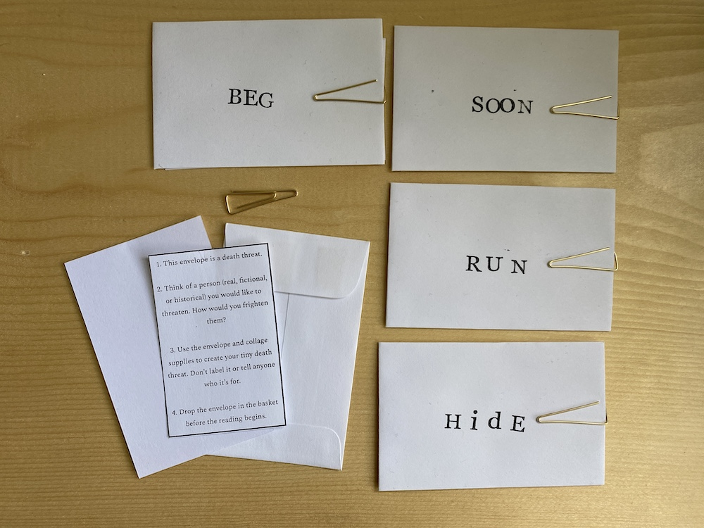
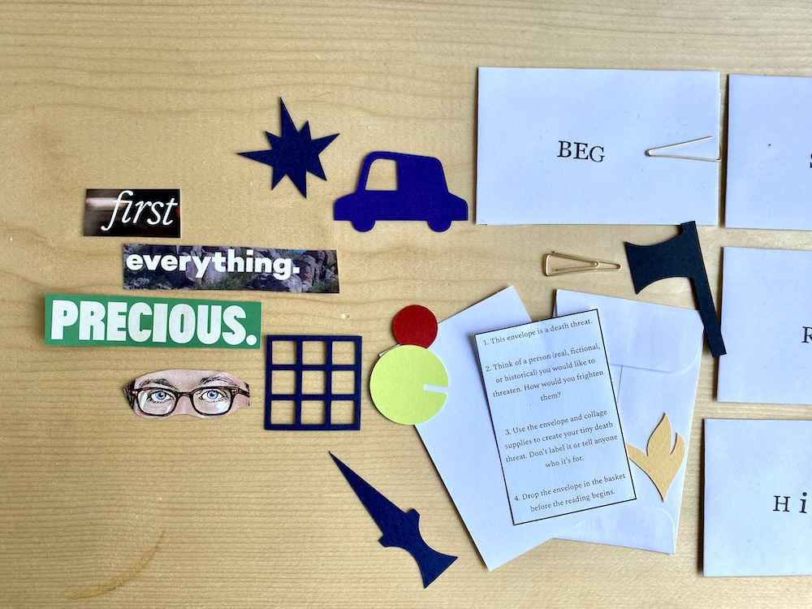
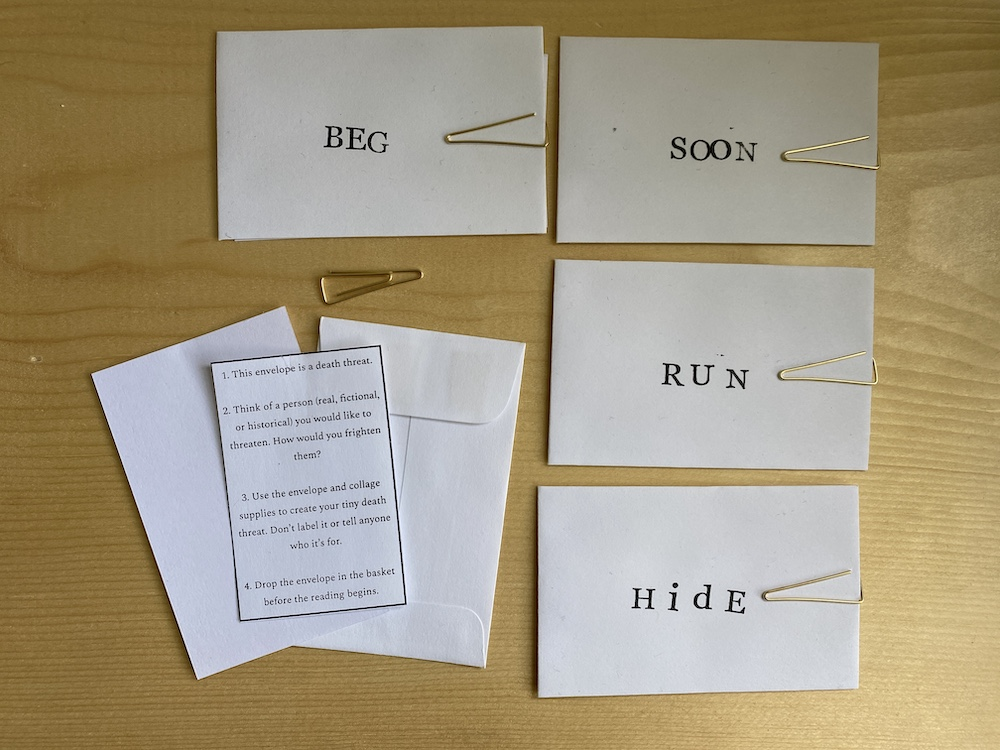
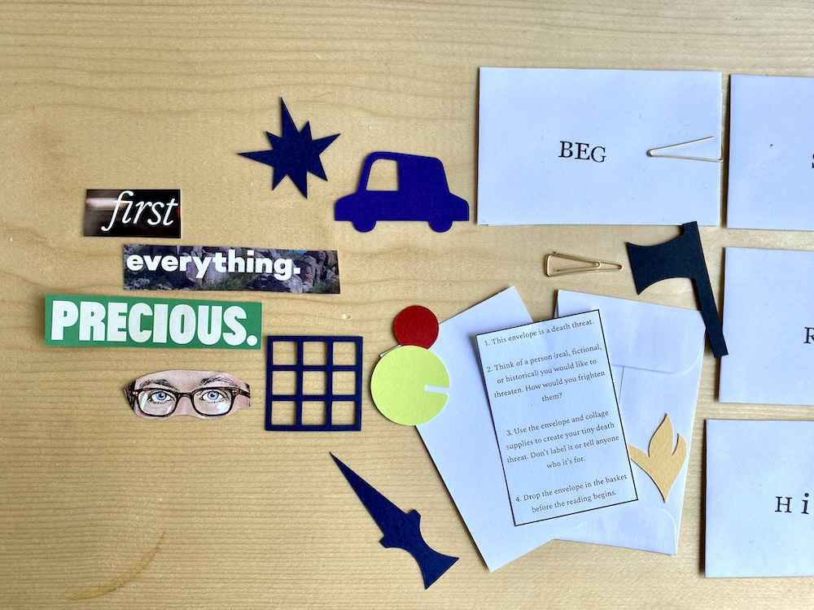
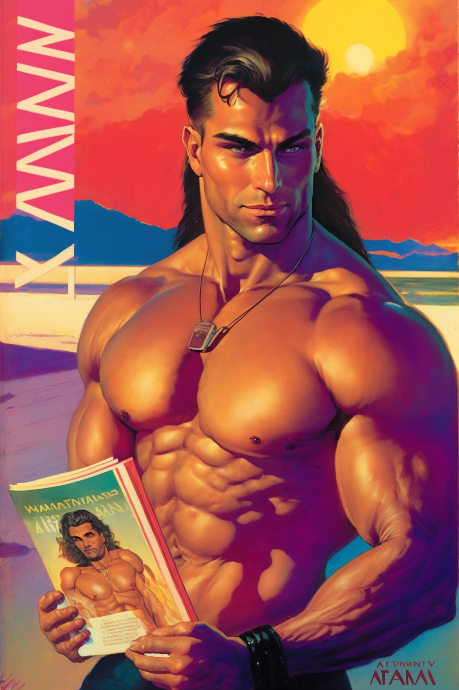
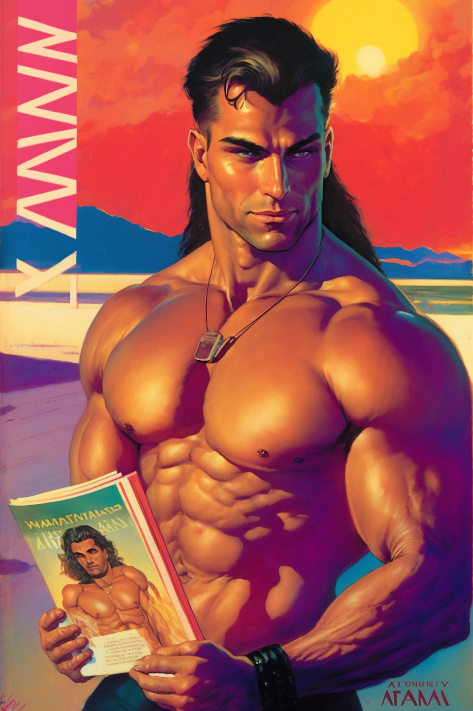

IN THIS ISSUE
Tiny Death Threats
Aku Ammah-Tagoe (inspired by Colin Winette's USERS)
ig @akuat
My friend Colin Winette published a novel, USERS, and asked friends to create art in response. I picked up on the novel's themes of interpersonal connection and disconnction, particularly through language. I was also fascinated by the small, succinct death threats the protagonist keeps getting in the mail, and the emotions they tap into. For Colin's book launch, I created envelopes and collage supplies and everyone was instructed to create a real death threat directed towards an actual person they feel anger or hate towards. Then we randomly, anonymously exhanged them. In the video, I explain the ideas behind the project and we read out some of the threats. In addition to Colin, I was fortunate to have contributions from paper artist Reina Takahashi and writers Kathryn Cai and Shane Zackery.
 



Pitchfork Review Generator
Paper Idol / Matan KG
ig @itspaperidol · tk @itspaperidol · tw @itspaperidol
The pitchfork review generator generates a pitchfork review about anything (yes, anything) in all its pretentious glory. Note that all reviews are critical. Don’t take it personally.
It isn't homesickness
Katie Novotny
ig @kathnovotny · tk @kathnovotny · tw @KathNovotny
There should be a different word for homesickness. A word to describe the longing for what once was. A snapshot in time that is forever framed in your mind as perfection. A moment cloaked in comfort, with highlights of smiles belonging to faces that know your favorite seat at the table. Maybe the moment lasted for just a moment – But maybe it lasted for weeks, months, and for the lucky few, years. The days that become routine and the nights that became expected. At the time you named it predictable, but looking back you know you you got it wrong. Because what is predictable without familiarity? A deep understanding of wants and needs laughs and favorite foods and the same four card games and Sunday night traditions. Of love. It is not homesickness, nor sadness, nor melancholy. Because what was once is no longer. New moments are forming faster than you can see them. The day begins with not a moment to spare. the expectation of what night holds shifts underneath. Life. Time. Change. Boundaries. Space. Growth. Age. Leaving the space between what we loved and what we will find only for us to find out. No, there is no word for this. At least not that I know of. I refuse to Google it.
Spinal Comb
Onkos
bc Onkos "Vascular Labyrinth" · ig @onkosonkosonkos (Bob)
Oh how fair stifled air, The generous dust beneath his head Sing to me, Muse, of the spine, that wondrous ladder of bone The thin vine inside us; running through Gather us, broken masts now. The thin teeth separate us. alien fingers stabbing in, separate all. revealing the world, revealing the world beautiful and ferocious, halfway through the Door of Peace So chaotic and serene. The thin vine inside us, unkempt strands, Gather us, raw and unvarnished. grasping at angles and whispers. Now I breathe a prayer to detach
For Crystal
Danny Meyer
ig @xasopheno · weresocool.org
I wrote this piece in a programming language I've been writing for composing microtonal music geometrically called WereSoCool. The animation was made using a framework I'm building for generating videos using stable diffusion models. This piece was writting for Crystal Pascucci-Clifford. She'll play cello on this piece and then I think it will be done.
Content Warning! Microtonal Music! Buyer beware! No Refunds! Also, it's a little flashy, so probably don't watch if you're super senstitive. Also, the Onkos piece is amazing. You could always just watch that instead.
For Bob and Mark (With Bob and Mark)
Mark Pascucci-Clifford (With Robert Woods-Ladue and on account of the music of Danny Meyer)
bc Dirty Snacks Ensemble · ig @xasopheno (Danny) · ig @mouscula (Mark) · ig @onkosonkosonkos (Bob)
Danny Meyer created this track initially using his mircotonal programming language, WereSoCool [ed: see above], and had Bob and I add to it as we saw fit. Here is where it currently stands with added drums, vibes, and gong.
Content Warning! I recorded the vibes over a stereo master track using mismatched overhead mics, so the mix is supremely sub-optimal. But, to quote David Berman, in the end we must be who we are.
Grindcore From Hell, Part 1
Ethan Geller
ig @costcorothko · tw @pragmatism
Part 1 of ?
It can always be louder. You can up the voltage, scream until your throat is shredded, punch fucking holes through the snare. All you’re doing is pushing more air and hoping it hits an eardrum harder. But there’s always more air to push if you could eek out one more decibel from your wretched, broken resonator of a body. It can always be louder. Until you push air so hard that it snaps back and pulls at the atmosphere until it splits in two, it can always be louder.
Ears make it all meaningless. The louder the sound, the more your head tenses, pulling back the tiny hairs meant to deliver the shock of audio to your brain. You can only punch an ear so hard before it shields itself. There’s no upper boundary to how loud you can be, but there is a limit to how loud you’ll be heard.
The only recourse is shock. Contrast. Keep the listener in a lull of quiet. Weave sounds that are so lightly textured, so delicate, that the crowd goes limp-eared and slack-jawed. And when they are staring glass-eyed at empty space on stage, entranced in the nothingness of it all, strike. Hit the instrument as hard as you can, and when the crowd’s brains expect the formulae of music, throw them a haymaker. This is the secret to music; how you become heard over the unrelenting noise of living. Rhythm is bullshit. Harmony is bullshit. Formula, structure, counterpoint, all created by assholes in the catholic church a millennium ago to convince us there was a right way to make music. But this is all that matters: The nothing of silence punctured by cacophony.
Colby knew this truth his whole life. Today he found himself on the receiving end of it. After eighteen months of held hands, whispered I-love-yous, a quilt of tiny compromises; discord. “There’s no nice way to say this.” Nicole said plainly across the dining room table. “I just wish you were into normal stuff. Why does everything you’re into have to be so fucking weird?”
Colby fidgets in twelve different directions: Scratching the tattoos along his arm, twitching in and out of a sneer, running a hand through his hair. He fails to respond. “Like, my friends just laugh now when they ask why you couldn’t make it out. Last week when you bailed on dinner with my family for that weird concert? Do you know how it feels for me to have to make excuses for how fucking weird you are?”
Colby locks in on the wrong segment of a larger problem. “It was Leftover Crack, Nicole… They’re my childhood heroes. They never come out to Texas. And I got to hang out with them after the show!”
Nicole’s cheeks start to flush red, her neck tenses. “You smoked menthols behind a boys and girls club with them. Instead of meeting my family. God, do you even care how that makes me feel? I just…” She releases and slumps over, defeated, tears streaming down her face. “I just don’t even get it. Like, if it was something I understood why you were into it, maybe that would make me feel better about how little you give a shit about me and what I need from you. But God, Colby. The shit you’ve chosen over me is so fucking weird. It’s loud and angry and I don’t fucking get it.”
Colby doesn’t feel guilty for the times he’s let Nicole down, but he is bewildered. He focuses on the table, places both his hands on it, closes his eyes and lets the anxiety rush through him. He opens his eyes again, tears welling. “I thought you liked the way I was weird.”
Nicole cocked her head, pensive. “I did at first. It made you interesting, full of mystique. My pensive gutterpunk boyfriend. But I can’t be in a relationship with a mystery. I don’t feel loved here, Colby. I feel abandoned for some of the shittiest music I’ve ever heard.”
They simultaneously realize that this is the détente, this is the kernel of incompatibility that makes their relationship unviable: The music came first. Colby couldn’t explain why, nor did he want to. He stood up and grabbed his backpack. “I’ve gotta move gear. I’ll sleep at the band house, I can come by and pick up the rest of my shit when you’re back from spring break.” Nicole nodded solemnly, brows furrowed. “Break a leg tonight, asshole.”
Biking in the center of the road, rhinestone cross earrings bouncing against his neck as he banked around the corners of College Station, Colby felt nothing but resentment. He knew Nicole was right. He’s abandoning everything he could be doing to receive love and reciprocate it. But he wanted more than anything for her to be wrong. He wanted to dedicate his life to music and still turn out fine. He arrived at the house and pushed these thoughts to the basement of his brain.
Renata and Paul were smoking on the front porch when he arrived. Renata saw him and clicked the garage door opener. “You’re here last, Colby.” She yelled in a deep-fried rasp. “Means that you get to load the bass cab. How is Normie Nicole doing?”
Colby glided into the garage, threw his bike against the wall, and heaved an amp into the trunk of Paul’s car. “No bueno, Renata. Nic broke up with me.”
Renata coughed a half-laugh. “Oh shit, Col! I’m sorry. You kinda saw this coming though, right?”
“Dude didn’t you ditch on dinner with her parents for a Nails show?” Paul said while stomping out his cigarette and starting to break down the drum set.
“It was Leftover Crack.” Colby spat, exasperated from hauling an endless sequence of amplifiers. “That show fucking ripped. You guys should’ve come.”
Paul laughed uncomfortably and shared a loaded glance with Renata. “Dude, we had actual life shit to do. I had an exam the next day, Ren always works nights on Wednesdays. You had life shit too and you didn’t show up for it.”
Colby stacked cymbal stands wherever they fit along the crevices of the amp and drum pile they had created in Paul’s trunk. “Whatever. It was sick.”
Rentata broke into a malevolent grin. “Colby is more crustpunk than man at this point. Let’s run, load-in is in 20.”
They showed up for load-in right on time. On this cloudswept night, the venue for the show was Sweat Lounge, a 200 person club that only has PBR on tap. Tonight, Colby, Renata and Paul’s band- a screamo band named Body Fluids – would be opening for the biggest grindcore band out of Texas, Bamphomets. Paul pulls into the alley and straddles the prius over a human-sized, inexplicable puddle - Colby couldn’t remember the last time it rained. After calling the venue manager twice, they are finally let in, shoulders wreathed in gear bags. Afterfour trips up two flights of stairs and down a fluorescent hallway, the trio has brought everything they own, stageside. Ren looks out over the undecorated room past the stage and whistles in quiet wonder. “What do you think, Paul? This place packs at least 200 people, right? 300?”
Paul shrugs. “The manager said 150. The fire code plaque said 125. Fuck if I know. We’re not filling it.”
Ren punches him. “You don’t know that. Bamphomets are fucking heavy, man. Everyone knows them.”
Paul nods slowly and stares pensively at the stage. “We’re gonna play the same shit regardless.” He turns to Colby and smiles. “If nobody shows up we’ll still burn it down.” Colby nods, barely paying attention, arms crossed in a self-hug, tapping polyrhythms on his shoulders. He looks at the backstage clock.
“Shouldn’t we be soundchecking?” he mutters at the wall.
Suddenly energized he bounces out on stage and yells to the bearded sage manning the boards. “Yo, dude, shouldn’t Body Fluids be sound checking? Should we set up?”
The man behind the boards tears up and shakes his head. “We’re running late.” Of course, Colby thought. There’s never been a soundcheck that ran on schedule in the history of hardcore music. Body Fluids was the only band that showed up on time to any bill they’ve played on. Something is different here, though. Nobody was worried on the day of the show, but today, the man behind the boards had his brows furrowed, eyes flitting around the room, looking like he was about to cry. “Bamphomets just arrived. You need to get off the stage.”
Colby steps forward and awkwardly shoves his hands into his pockets, shaking. “Hey, what the fuck? It’s 90 minutes until doors. How long do they plan on soundchecking?”
The sound guy is pleading into the talkback microphone. “For God’s sake, Bamphomets is coming, get the fuck off the stage!” his sweat-drenched scalp glints the hard blue of the stage lights. Colby looks around. There’s nobody here, why is this guy freaking out?
“Okay. Okay.” Colby scratches the back of his head, steps forward once more to the lip of the stage. “Fuck soundcheck, we just need two vox and a dual cab mic’d. We’ll check with the headliners to see if we can use their bass amp and kit. Does that work for you?”
The sound guy barely seems to have heard this. “Okay, fine, but for Gods sake get the fuck off stage, Bamphomets is coming!” Colby was exasperated; this was the worst day of show they’ve had since they started. As he’s walking away, he hears a long, falsetto shriek of laughter. He turns to stage left. The shriek occurs again from the pitch-black shadow beyond the curtain.
The room is dead quiet. Colby was frozen in place on stage. The sound guy is breathing audibly into the talkback microphone in quick, shallow breaths. Unceremoniously, three men emerge from the shadow in a line. The bassist walks past Colby without noticing him, silently patches in his bass, and starts tuning. “Uh, hey… I’m Colby.” Colby gulps. The bassist casts a glance at him, then turns back to his instrument.
“Ah hey what’s up man.” he says in a barely audible mumble. “I’m Rome. Drummer over there is Deel, guitarist over there is named Mas.”
“Oh, sick, dude.” Colby trails off. “Those are all cool names…” He is staring at the jet black six string bass Rome is tuning. They stand in uncomfortable silence for another beat before Colby speaks again. “Listen, we’re not going to have time for a soundcheck, so we were wondering if we could just use some of your gear. Mostly your bass amp and drums.”
Rome nods without looking away from his pedalboard. “Yeah, sure man. Just ask Deel if he’s cool with you guys using the drum kit.”
Colby nods so hard his neck hurts. “Sick man, thanks a ton. I’ll go ask him now.” The room is still dead silent. The entire band is at work, patching pedalboards, tuning, setting up hardware, but there’s hardly a sound. He jogs over to the drums, where Deel, dressed in a oversized blue hoodie and dirt-stained jeans, is setting up cymbal stands.
“Hey, Deel?” Deel stops and drops the cymbal stand with a loud thud. Everybody in the band suddenly stops working at once.
“I don’t know you.” Deel says in a shrill falsetto. “I don’t think I want to know you.” A quiet weeping noise comes from the monitors on-stage. “You look frail. Desperate.” His eyes are draped in shadow by his hood. His lips extrude outwards into a garish smile as he bites his bottom lip. A drop of blood weaves its way down his chin. The crying in the monitors grows louder, then all stops at once. They are left in silence.
“WHAT DO YOU WANT!” Deel bellows suddenly, droplets of blood flying off his chin onto his navy-blue sweatshirt.
Colby recomposes himself. “Hey man. Do you mind if we play your drums for the opening set?”
At this, Deel’s head lurches to face him, eyes suddenly visible, pale-yellow irises punctured by jet-black, thorny pupils. He says nothing, his face frozen in a blank stare towards Colby. Colby is at a loss. “We can… we can swap breakables.” Deel curls his face back into a smile. It looks like his entire face is swirling clockwise, being pulled about his nose by some invisible force, skin tugging in impossible directions.
“You look breakable.” he whispers. He breaks into another shrill laugh. “Play it! Play the set. I don’t mind.” He turns back to his snare and pulls out a tuning key. “Watch the hihat clutch though. It slips sometimes. HEEHEEEHEE!” Deel ends the conversation with an impish laugh.
Colby nods and mumbles a thankyou before jogging off stage. Ren and Paul are there, bewildered at what they witnessed.
“Col, what’s the plan?” Ren says.
“We’re good. Paul can use their kit as long as it’s our breakables. I’m using their bass amp. You can stack your amp and before the show and we’ll just throw another mic on it.” Colby does not trust that any of this plan will work when it’s time to go on stage. They retreat to the green room.
The three members of Body Fluids arrive in a busily decorated green room. Three ratty? earth-toned couches and an overcrowded desk bordered a dusty coffee table in the center, littered with decade-old magazines. Phil finds the coffee machine in the endless mess of trinkets on the desk and makes a pot. As he watches the coffee drip, he casts a glance at the speaker meant to route the stage audio, humming with noise. “Hey, shouldn’t we be hearing Bamphomets soundcheck over this thing?”
Ren is already doing her pre-show ritual: staring at a wall, squeezing her eyes closed as hard as she can, and then trying to see something new the moment she opens them again. “I don’t know, Phil, it might be broken. But yeah, we should be hearing something from them. What the fuck are they doing on stage? Tuning for an hour?”
Colby is pacing back and forth in the 3 square feet of walking space in the room. “Those guys are serious. Did you see their gear? I can’t believe I’m gonna be playing through their cab. Phil did you see Deel’s kit? I’ve never seen shells that look like that. Was that maple?”
Phil shook his head. “No way that was wood. It looked wrinkled. Like leather or some shit.”
Ren furrowed her brow, feigning a deeper analysis of the instrument. “I bet its human skin, Phil. Like a death metal schtick.”
“Fuck off, Ren. I wouldn’t be surprised; these dudes are living it. They’re in the trenches.” Phil replies with a laugh.
The band spent another hour in the green room in relative silence, the buzz of the speaker in one corner of the room, the hiss of the coffee machine in the other. Ren interrupted the prolonged silence.
“It’s a lot though, right?” She gulped and emitted a nervous laugh. “Like, they really seem like they’re in too deep with this satanic shit.”
Paul nodded vigorously. “Yeah, yeah, it’s one thing to do it on stage. They were doing their Excorcist bullshit when Colby was asking if we could borrow their kit.”
Colby shrugged. “That doesn’t seem that weird to me. They do this shit better than anyone else. The bassist seemed chill.”
Ren nodded at this. “Right, the bassist seemed way more normal than… Deel and Mas? Are those their real names?”
Colby and Phil shrugged.
Ren’s eyes narrowed. “And their bassist’s name is Rome? Come on man, its theater kid shit out there.” Colby and Phil erupt in laughter. Ren continues, barely keeping it together herself. “Like, okay, you didn’t get the lead part in your high school production of Wicked. So, you’re gonna put on cat eye contact lenses and start a punk band?” The three are now crying in laughter “Get over yoursel-”
Ren is interrupted with a loud thud against the door of the green room.
They all stop and stare. The door remains closed. Five seconds of complete silence pass, and it bursts open, revealing Deel and Mas. Mas, flicking a switchblade open and closed, jumps onto the desk, knocking off several books and spilling the pot of coffee all over the floor. Smiling, muttering to himself, he opens the switchblade and starts carving into the desk.
“Yes… that’s better… fucking awful echo…” He is inhaling sharply between each quiet utterance, grunting as he carves a new line into the desk. “Needs… some fucking… acoustic… baffling…”
Mas suddenly stops carving into the desk at his feet. He pulls the blade up to his cheek and rests his head against the broadside of it, staring at Ren, Paul and Colby. His lips curl into a smile, and his nostrils shudder with a sudden inhale. “Hello, Body Fluids!” He rasps. “Are you ready for the best performance of your life? It’s going to be fucking murder out there.”
Ren is the first to speak. “Yeah, man, I think we’re set-”
Mas interrupts her with a shriek. “FUCKING! MURDER! Out there. We are going to take this shitty club-” Mas stabs the switchblade into the desk and jumps off of it. “APART!” Deel, clearly used to this, laid down on one the couches and opened a Rolling Stone from the center table to read an interview with Celine Dion. Mas saunters over to Colby.
“You’re the bassist, right?” He hisses and bends over to get a closer look. Colby feels Mas’ hot breath as saliva droplets bounce off his forehead. He notices a long scar running on the right side of Mas’ face, as if extending his mouth across the right side of his cheek. “Seems like you’re running this operation.”
Colby shakes his head. “We’re all kinda involved in logistics-” Mas pulls a second knife out of his pocket and opens it above Colby’s head, flipping it in his hand. Colby reels away from Mas at the sight of this, closer to Ren and Phil.
“That’s not what I mean.” he says in an urgent half-whisper. “Anyone can do logistics. You’re going to make this show happen if it kills you. I saw you negotiate for Deel’s drumset.”
“It wasn’t much of a negotiation, man. He’s using his own cymbals and shit.” Deel says from behind the magazine, a picture of Sean Paul obscuring his face.
“Using your own cymbals!” Mas cackles. Colby, Ren, and Phil all emit nervous spasms of laughter, trying to play along. Mas abruptly stabs the butterfly knife into the wall above the couch Colby is on, sits down and puts his arm around Colby. “I like your initiative, Colby. Initiative is the only thing that is gonna keep you alive in this shithole of an industry man. Talent doesn’t mean shit.” Colby is scared shitless, but when he hears this, combined with the warmth of the arm around his shoulder, he suddenly feels a glint of safety, a glint of acceptance.
“Thanks, Mas. That means a lot coming from you.” He relaxes a bit into Mas’ arm. “I’m gonna come off as a dork, but I respect the hell out of what you guys do, Mas. Bamphomets is fucking real, man. You guys are the hardest band out of west Texas.” Mas freezes up. Deel puts down the magazine. Mas stares at the table, cheeks pulling into a warm smile. He pulls his arm away from Colby and crosses them.
“Thanks, man. That means a lot coming from another musician.” Deel cocks his head and smiles at Mas. Mas sees Deel smiling at him and is suddenly aware of himself. He jumps on the table. “Get the fuck out there, Body Fluids!! Get out there and destroy some shit.”
Ren, Colby and Phil scurry out of the green room bewildered. “What the fuck was that?” Phil stammers. “Are they allowed to do that? Destroy the green room? Do other bands do that?”
Ren is shaking her head furiously. “I don’t know man this is fucked-“ They suddenly stop as they see Rome, leaning against the wall stage side, vaping furiously, coating his vicinity in oily clouds He notices the band and locks eyes with Colby.
Suddenly, Rome starts tearing up. “Break a leg out there, Colby. Break a fucking leg out there.” Colby is sufficiently freaked out by this to not respond.
The band jogged past Rome onto the stage to yelps and applause and picked their guitars up off the rack without stopping. Through the hard white of the stage lights, Colby saw at least a hundred people packed towards the stage. This was the biggest audience they’d played for by a mile, but that didn’t change things; he never notices the audience when he starts playing. He smiled, offered a quick wave to the crowd, then patched in. As he pulled the volume knob clockwise on his bass with his pinky, he could feel a pulse of electricity through his chest- this was the loudest cab he’d ever played through. He let his hands fall from the instrument, hearing the feedback wash through the amp, the venue, and back into his pickups, accumulating into something massive, something terrifying. He made eye contact with Ren and Phil, already at the ready. Colby nodded quietly, then started playing the riff of their opening song. After two measures, Ren and Phil hit the downbeat and they were off. Despite the chaos of the previous two hours, everything on-stage was working. Not only was it working; it fucking ripped. Colby was in control of something larger than himself. His hands felt pulled towards the pickups. Every time he struck the wound nickel of the strings, he felt a gust of wind push the back of his head. Any time he hit an open string he could feel it resonate with his jawbone.
Twenty minutes into their set, Colby is drenched in sweat, oversized shirt barely hanging on to his too-thin torso. As he glancedover to Phil and Ren, they also looked physically wrecked, clavicles rippling in harsh red and blue reflections. Phils arms blurred into a blast beat, face wrenched in pain, while Ren strummed so hard you could hear the strings torque and pull against her fingers. They crescendo’d, crawling up the fretboard, until they hit the final breakdown of their set. At once, Ren and Colby struck open strings, reeling backwards in a daze on stage from the sheer force of it. Suddenly remembering the song, they scrambled to the microphones and bellowed.
“YOU WILL FUCKING DIE HERE, ALONE AND AFRAID!”
Colby could feel new cavities opening in his throat, unlocking new octaves below what he previously knew. In the back of the venue, Mas and Deel stood up, ears perched high on their scalps. They silently floated through the crowd, being recognized by handfuls of audience members with yelps of surprise. Colby sucked in metallic air through the wired cage of the microphone and primed himself to scream once more.
“YOU WILL FUCKING DIE HERE, ALONE AND AFRAID!”
Colby felt like his entire chest had been engulfed in flames. Senses activated, he flicked his eyes viciously down and to the right, and his brows jumped up his forehead, peeling his eyelids back in an elastic yank. He had locked eyes with Mas, who was now grinning from ear to ear alongside Deel, in front of the audience. The scar Colby had seen on Mas’ cheek seemed torn agape, revealing a long line of jagged teeth running to his earlobe. Colby stared in a stupor. It must have been a trick of the light or adrenaline coursing through his body. Time was up, though; He slammed his fist against his bass, sending a shockwave of low end at the audience, and returned to the microphone, gasping for air.
“YOU WILL FUCKING DIE HERE, ALONE AND AFRAID!”
Colby left his post at the microphone again and tumbled around the center of the stage like a drunken marionette. He could hear Mas and Deel cackling. They were walking through the mosh pit, swinging their arms like clubs. Mas’ arm struck a fan in the temple and knocked him out cold; Mas barely noticed. Colby recomposed himself and pulled back to the microphone.
“AND I WILL BE THERE WITH YOU IN THAT SHALLOW GRAVE!”
With this they struck the final chord. He walked back to the amp, slammed his forehead against it, and held the bass up to the cabinet, inducing as much feedback as he could to keep the final note going. He didn’t want this set to ever end, but it must at some point. Out of his left ear he heard Ren’s voice on the stage monitor. “We are Body Fluids from West Texas, thank you!” He put his hand on the strings to dampen, peeled his forehead off the amp, and limped off stage right.
Colby pulls the bass from his shoulder and sets it in the rack, still bristling with malevolent energy. He feels a warm mass leap onto his shoulders and hears Phil yelling inches from his right ear. “WE BODIED THAT SHIT!”
Colby laughs and collapses, rolling Phil and him onto the floor leaning against the wall. Ren sets her guitar down, then jogs and jumps headlong into their bodies, hitting Colby in the ribs with her elbow on the way down. “Fuck guys. We did it. We killed it.”
Colby laughs between grunts of pain, wrapped in the sweaty limbs of his bandmates. “Compromised to a permanent end. I’m fucking beat.” Phil nods and rests his head on Ren’s shoulder. Overwhelmed, stupefied, Body Fluids falls asleep, sitting against the wall of the Sweat Lodge.
Colby’s mind is tugged away from his eyes and ears and cast adrift in dreamtime. A kaleidoscope of fear and terror extrude from his subconscious, lapping at his feet before pulling back into an inky, colorless sea. He walks in, feeling a translucent green sand of shattered beer bottles crunch under his feet. Endless cigarette stubs jot the waterline. He feels the oil and grease of the sea up to his knees when the lanky form of a man emerges in front of him, facing him, grinning. The man, slick with oil, pulls Colby in for a hug. Slowly, tenderly, the oilslick man pulls Colby down, through the oil, into something more viscous, a grey-black gelatin or animal fat. For precious few seconds, Colby is at peace; a vacuum in which no light or sound exists at the bottom of the sea. A caterwaul of wood on drums and lips on microphones tears his surroundings asunder.
“I WAS YOURS!”
Colby jerked awake and hit his shin on a piece of sharp and cool metal. A bolt of pain ripped up his leg. He shrieked and can barely hear himselfof drums, staring up at scratched, industrial metal. He looked to his left to find a wall, and to his right to see a dozen feet in worn converses. He pulled himself out towards the shoes to discover he was under a staircase, opposite the stage of the sweat lodge.
“I WAS A GHOST!”
Colby pulls himself up amongst a group of leather and denim clad twenty somethings, standing and awkwardly bobbing their heads as they nursed their beers. He limped, dragging his foot across the sticky floor, until he found a wall to lean on. From there, he pulled his head to the stage, where he could see Bamphomets playing.
“I WAS BLEEDING OUT AND WHEN I NEEDED YOU, I WAS ALONE!”
Mas attacked the microphone with a barely intelligible shriek over an assault of distortion. Deel’s hands were a blur, moving across his flesh-textured drumset with an ethereal lack of effort. He was deadfaced again, staring out into nothing, while his body whipped about the set like fabric caught in an industrial fan.
“I WAS ALONE, I WAS ALONE! I WAS BLEEING OUT AND WHEN I NEEDED YOU I WAS ALONE!”
Where Mas was a vortex of energy and Deel looked effortless, Rome looked panicked. His pick hand was tense, strained, trying to keep up with a song that seemed to be accelerating out from under him. Deel whipped his head about and stared at him solemnly above his wiry hurricane of limbs. Mas stepped on some type of pedal, unleashing a new level of distortion, and walked quickly towards Rome, thrashing at his guitar. Rome’s face was contorted, his brows furrowed so hard you couldn’t see his eyes, yelling in pain. Mas kept approaching until he was face to face, then pushed his forehead onto Rome’s, never breaking eye contact. Trashing the open chord even harder, Mas started to visibly yell. Rome’s face, still twisted about in agony, tore open in a scream, as his hands started to visibly miss frets, at times outright spasming against the neck of the bass. A 19-year-old in a torn Can t-shirt climbed on stage and jumped off into the thrall. Others joined, threatening to overtake the audience that stayed on the floor to carry them. After a minute of this, Mas struck a final chord and walked back to the microphone. “We are Bamphomets, Thank you!” Rome had already unplugged and broke into a run offstage.
“Woah, that was heavy.” Colby hadn’t even noticed that Ren and Phil had been standing next to him. “Yeah. Hey, didn’t we fall asleep backstage? What the fuck? Did you guys carry me under the stairs or something?”
Ren shrugged. “I don’t know, you were still asleep when I woke up.” Colby looked at Phil, who could only offer a shrug.
“Maybe you sleepwalked? Let’s hop back to the green room and talk to Bamphomets before they disappear into their van.”
Body Fluids walked through the crowd to mild recognition and congratulation before hitting the staff only door. “I might need another pot of coffee,” muttered Ren while she scratched her head. She opened the green room door and silently recoiled.
“Are you good? Did they trash it even more?” scoffed Phil.
Ren’s face was aghast, mouth wide in silent horror. Colby moved past her to look in the Green Room and reared back in shock. On the desk, next to the coffee pot, was a dismembered hand; bone and ligament splayed in a pile of cords, clutching a guitar pick. From the gnarled hand, a thin thread of bloody sinew traced along the room to its owning arm, bent backward at the shoulder. The torso at the center was headless, strung up by an impossible lattice of human flesh and muscle. It was cut laterally at the abdomen, organs spilling out. And on the floor, spelled in intestines draped from the torso, were the words “ALONE AND AFRAID.”In front of that, like a jewel in a bloody crown, was Rome’s head, face contorted in frozen agony.
END OF PART 1
AI Beefcake
Devin
website · ig @devinsmithwork
 

Thank you for visiting QUANTITY MAGAZINE!
This thing is run by Molly Bolten and Devin Smith -- and introducing... Mark Pascucci-Clifford!!!
If you would like to contribute, email us!!